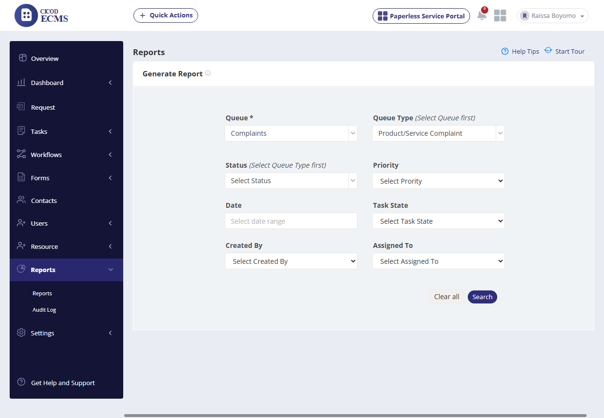
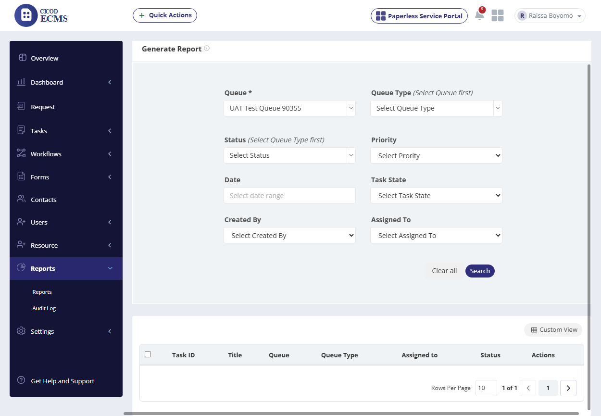
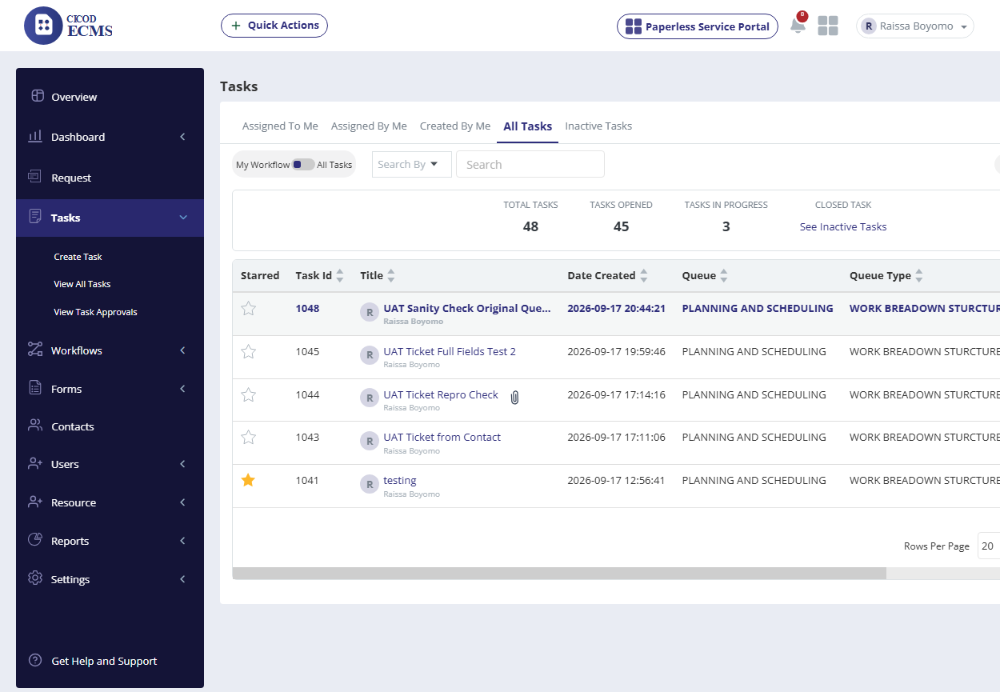
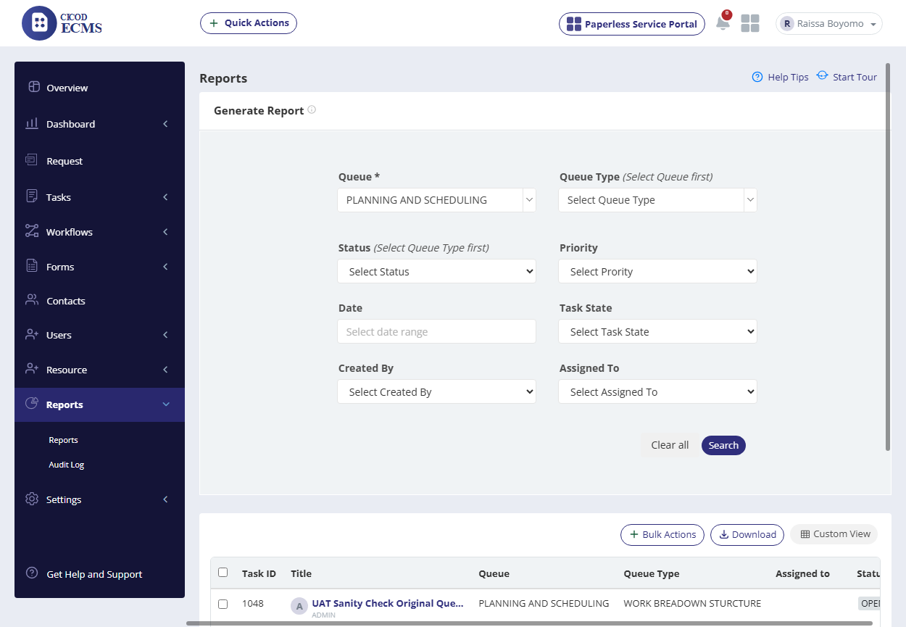
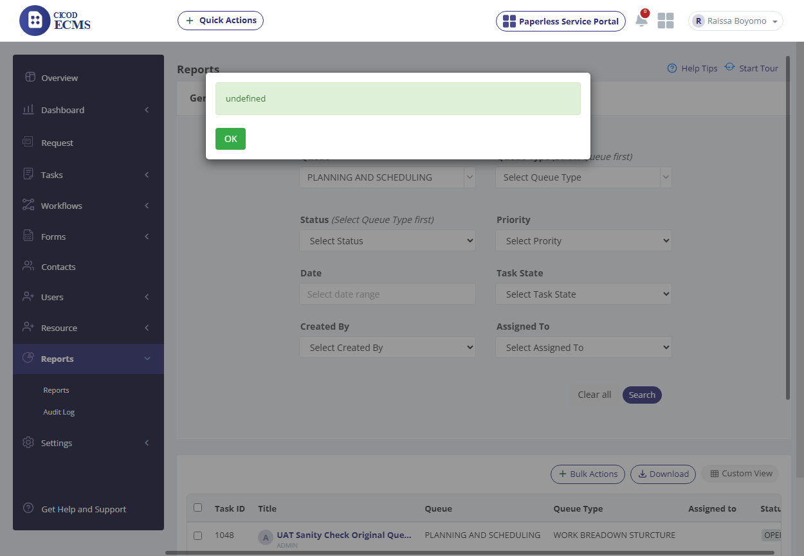

Live functional/UI verification of the standalone Reports feature — not represented in ECMS TEST SCRIPT RECENT VERSION.xlsx, so this scenario/step breakdown was derived from direct UI exploration. This session covered 10 checkpoints across 6 scenarios. Report search itself works correctly, confirmed via a ground-truth cross-check against the Tasks module: the cascading Queue/Queue Type filters populate correctly, and empty results for two queues were confirmed genuine (not a search bug) while Queue=PLANNING AND SCHEDULING correctly returned its 1 matching task. However, clicking Download on a populated report throws a raw, unhandled "undefined" alert instead of exporting a file (P1, confirmed 2/2).
| Row | Steps to Reproduce | Expected Result | Actual Result (Live Execution) | Deviations & Defect Notes | Status | Screenshot Evidence |
|---|---|---|---|---|---|---|
| 1 | From the sidebar click "Reports", then click the "Reports" sub-item | Sub-menu shows "Reports" / "Audit Log"; "Reports" loads a "Generate Report" filter form |
Confirmed: sub-menu expands to Reports / Audit Log, and the form loads with Queue* (required), Queue Type, Status, Priority, Date, Task State, Created By, Assigned To, plus Clear all / Search buttons. |
None. |
PASSED |
| Row | Steps to Reproduce | Expected Result | Actual Result (Live Execution) | Deviations & Defect Notes | Status | Screenshot Evidence |
|---|---|---|---|---|---|---|
| 2 | Click Search without selecting a Queue | Queue is marked required (*) — should not silently run a report |
No result table was rendered and the form stayed in place, so the required-field guard held; a validation toast appeared but had already faded to a barely-legible ghost overlay by the time the screenshot was captured, so its exact wording could not be confirmed. |
[Deviation]: validation toast not legible in evidence — fades too fast to read. |
PASSED (minor deviation) |
| Row | Steps to Reproduce | Expected Result | Actual Result (Live Execution) | Deviations & Defect Notes | Status | Screenshot Evidence |
|---|---|---|---|---|---|---|
| 3 | Select "Complaints" from the Queue dropdown | Queue Type dropdown should unlock/populate |
Confirmed: Queue Type changed from the disabled "Select Queue first" placeholder to a live, selectable dropdown. |
None. |
PASSED | |
| 4 | Select "Product/Service Complaint" from Queue Type | Value should be accepted, ready to search |
Confirmed: dropdown correctly shows "Product/Service Complaint" selected. |
None. |
PASSED |  |
| Row | Steps to Reproduce | Expected Result | Actual Result (Live Execution) | Deviations & Defect Notes | Status | Screenshot Evidence |
|---|---|---|---|---|---|---|
| 5 | Click Search with Queue=Complaints, Queue Type=Product/Service Complaint | Should display a results grid |
Grid renders with correct headers (Task ID / Title / Queue / Queue Type / Assigned to / Status / Actions) and pagination "1 of 1", but zero data rows and no Bulk Actions/Download/Custom View buttons — a clean, correctly-rendered empty state. |
None. |
PASSED | |
| 6 | Clear Queue Type, search with Queue=Complaints alone | Should widen the match, if any exist |
Still zero rows returned — consistent with row 5, not a narrower-filter artifact. |
None. |
PASSED | |
| 7 | Select Queue="UAT Test Queue 90355", search | Should display that queue's tasks, if any exist |
Still zero rows returned. |
None. |
PASSED |  |
| Row | Steps to Reproduce | Expected Result | Actual Result (Live Execution) | Deviations & Defect Notes | Status | Screenshot Evidence |
|---|---|---|---|---|---|---|
| 8 | Navigate to Tasks → All Tasks (independent of Reports) | Confirm whether real task data exists anywhere in the tenant |
Confirmed: 48 Total Tasks exist tenant-wide, with several tied to Queue "PLANNING AND SCHEDULING" (Task IDs 1048, 1045, 1044, 1043, 1041, etc.) — establishes ground truth for row 9. |
None. |
PASSED |  |
| 9 | Back in Reports, select Queue="PLANNING AND SCHEDULING", click Search | Should return the task(s) confirmed in row 8 |
Correctly returned 1 matching row (Task 1048, "UAT Sanity Check Original Que…", Queue Type "WORK BREAKDOWN STRUCTURE", Status OPEN); Bulk Actions / Download / Custom View buttons correctly appeared now that results exist. Confirms rows 5–7's zero-row results were genuine, not a search defect. |
None. |
PASSED |  |
| Row | Steps to Reproduce | Expected Result | Actual Result (Live Execution) | Deviations & Defect Notes | Status | Screenshot Evidence |
|---|---|---|---|---|---|---|
| 10 | With the row-9 result set on screen, click "Download" | Should export/download the report (e.g. as a file) |
CONFIRMED BUG (2/2 reproductions): clicking Download pops a native browser alert reading literally "undefined". No file is downloaded, and the dialog is a raw, un-caught value rather than any real message. Repeated once more — identical result. |
[Defect - P1]: Download action surfaces an unhandled "undefined" alert instead of exporting a file. |
CONFIRMED BUG (P1, 2/2) |  |